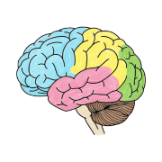
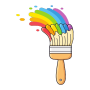

Algo sobre mí
Soy Docente, Diseñadora Pedagógica STEAM, Geóloga y especialista en Neuroeducación. Mi trabajo se construye en la intersección entre las ciencias experimentales, la tecnología aplicada y el aprendizaje accesible.
Como persona neurodivergente, entiendo de forma vivencial que no aprendemos de la misma manera. Por eso mi enfoque se basa en romper barreras cognitivas y sensoriales mediante el Diseño Universal para el Aprendizaje (DUA) y metodologías activas: transformar conceptos complejos en experiencias manipulativas, visuales y con sentido real.
Uno el rigor analítico de la geología y la investigación científica con el desarrollo de software y la pedagogía contemporánea. No diseño la tecnología como un fin en sí mismo, sino como una herramienta viva (EdTech) para crear situaciones de aprendizaje motivadoras, accesibles y con impacto socioambiental positivo.
Creo en las aulas con vida, los proyectos con propósito y las explicaciones sencillas sin perder una pizca de rigor técnico o científico.
Esta web mantiene una arquitectura minimalista, ligera y de bajo consumo energético, en coherencia con mi compromiso por la sostenibilidad ambiental y la accesibilidad digital.
¿Cómo trabajo?
Integro el rigor del método científico con la flexibilidad pedagógica y las herramientas tecnológicas contemporáneas.
Diseño Inclusivo y DUA
Diseño situaciones de aprendizaje y recursos didácticos eliminando barreras de entrada. Flexibilizo la presentación de contenidos para acoger la diversidad neurocognitiva en el aula.
Pedagogía STEAM y Laboratorio
Enseñanza basada en la indagación, la experimentación manipulativa y proyectos interdisciplinares (Ciencia, Tecnología, Naturaleza y Arte) aplicables a cualquier etapa formativa.
EdTech y Desarrollo Ágil
Aprovecho mis bases en desarrollo full-stack (Python, entornos web, datos) para diseñar herramientas educativas digitales, plataformas interactivas y proyectos de gamificación.
Trayectoria Profesional y Docente
- 2026 - Actualidad — TransversaLab (Fundadora & Asesora Pedagógica): Asesoramiento a familias y centros educativos en neurodivergencias, diseño curricular bajo el marco DUA, formación al profesorado en laboratorios STEAM y transposición didáctica accesible.
- 2019 - Actualidad — Geobizi (Directora de Proyectos y Divulgación Ambiental): Diseño y coordinación de programas pedagógicos, talleres científicos de biorregeneración y rutas interpretativas en la naturaleza para centros escolares, familias y administraciones locales.
- 2024 - 2025 — Peñascal Koop. & Zimendu (Desarrolladora Web y Formadora Técnica): Desarrollo de software de gestión y capacitación técnica impartiendo masterclasses de programación, metodologías ágiles e inteligencia artificial.
- 2022 - 2024 — Centro de Estudios INATEC (Docente de Formación Profesional para el Empleo): Docencia en certificados y módulos oficiales de sostenibilidad, huerto urbano, ecoturismo y dinamización sociocultural. Planificación y evaluación por competencias en adultos.
- 2017 - 2018 — Universidad del País Vasco (UPV/EHU) (Personal Investigador y Técnico en Micropaleontología): Investigación de impacto ambiental y evolución litoral mediante análisis bioestratigráfico; colaboración en actividades de divulgación científica universitaria.
Formación Académica y Especialización
- Máster Universitario en Neuropsicología y Educación — UNIR (En curso / 2026)
- Máster Universitario en Formación del Profesorado (Secundaria y FP) — VIU
- Máster en Cambio Climático e Impacto Humano (Cuaternario) — UPV/EHU
- Licenciatura en Geología — UPV/EHU
- Docencia de la Formación Profesional para el Empleo (SSCE0110) — 380 h
- Acreditación de Docentes para Teleformación (OC22202600) — Lanbide
- Certificado de Profesionalidad en Confección y Publicación Web (IFCD0110) — 900 h
- Bootcamp Data Science (IFCD66) — C2B (500 h)
Áreas de especialización complementaria
Competencias interdisciplinares que articulan mi labor pedagógica y técnica.
Explorar especializaciones y otras certificaciones/cursos

Neuroeducación, Psicología e Inclusión
Diseño Universal para el Aprendizaje (DUA), psicología infantil y familiar, gestión emocional, autorregulación y acompañamiento centrado en neurodivergencias.
Pedagogía Activa y Formación Docente
Didáctica de las ciencias experimentales, metodologías activas STEAM, formación de formadores, dinámicas de dinamización grupal y mediación.

Tecnología Educativa, Videojuegos y Datos
Programación de videojuegos con Unity (Harrobia), generación de entornos de innovación (Sandboxes), Python, SQL, analítica digital, Penpot y metodologías ágiles.
Medioambiente, Geología y Sostenibilidad
Gestión ambiental ISO 14001, bio-regeneración de suelos, ecoturismo, arqueología y micropaleontología de zonas costeras.
Asesoramiento Pedagógico y Proyectos STEAM
Áreas de intervención educativa y formativa
Asesoramiento en DUA y Neuroeducación
TransversaLab: Acompañamiento a centros educativos y familias. Estrategias de aula y pautas de vida cotidiana para comprender y potenciar los perfiles neurodivergentes.
Capacitación Docente en Metodologías STEAM
Formación de Formadores: Talleres de laboratorios prácticos de ciencias, transposición didáctica y diseño de situaciones de aprendizaje manipulativas para profesorado.
Docencia Profesional y Empleabilidad
FPE & Teleformación: Impartición de módulos oficiales y dinamización de entornos formativos para perfiles adultos en transición sociolaboral.
Divulgación Ambiental y Biorregeneración
Geobizi: Itinerarios científicos, ciencia ciudadana y talleres en el medio natural para conectar la escuela y la comunidad con su patrimonio geológico y biológico.
Proyectos Digitales y EdTech
Desarrollo web, gamificación y software interactivo
Publicaciones Científicas
Artículos de investigación y geología ambiental
Ecosistema de Competencias
Pedagogía & Inclusión
Marco DUA, Neuroeducación, Metodologías STEAM, Acompañamiento a familias, Docencia FPE, Evaluación formativa.
EdTech & Desarrollo
Python, Vue.js, Angular, JavaScript (ES6+), SQL (SQLite/MySQL), Unity, Docker, Git, Accesibilidad web.
Comunicación e Idiomas
Castellano (Nativo), Euskera (Bilingüe - C1), Inglés (B1). Divulgación científica, facilitación de grupos y metodologías ágiles.
Contacto
¿Hablamos de proyectos pedagógicos, formación STEAM o consultoría en inclusión?